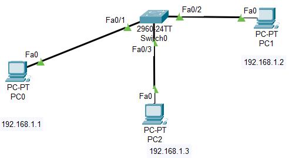
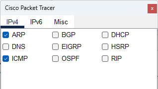
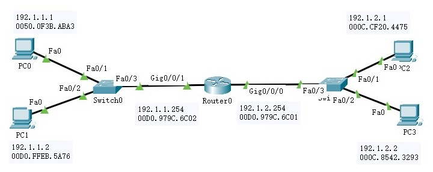
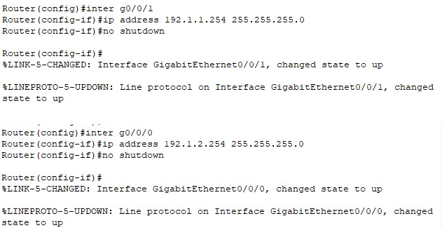
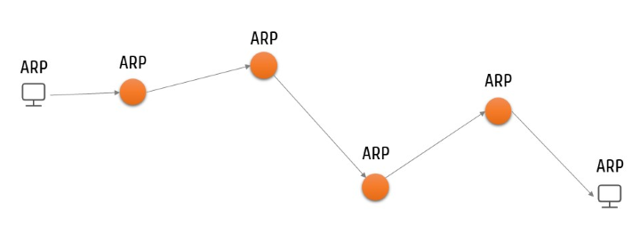
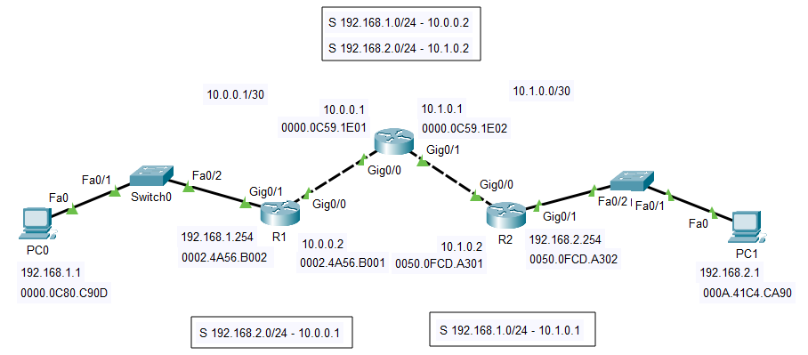

3台 PC
1台 2960 交换机

PC0：192.168.1.1
PC1：192.168.1.2
PC2：192.168.1.3
测试到 PC1的连通性，观察 PC0、PC1的ARP 表、Switch0 的 MAC 表
测试到 PC2的连通性，观察 PC0、PC2的ARP 表、Switch0 的 MAC 表
arp -d

PC0 先缓存数据，发起 ARP request（广播）请求 PC1 的 MAC 地址
交换机广播分组
PC1 接收分组并回复
PC2 丢弃分组
PC0 封装并通信
...



